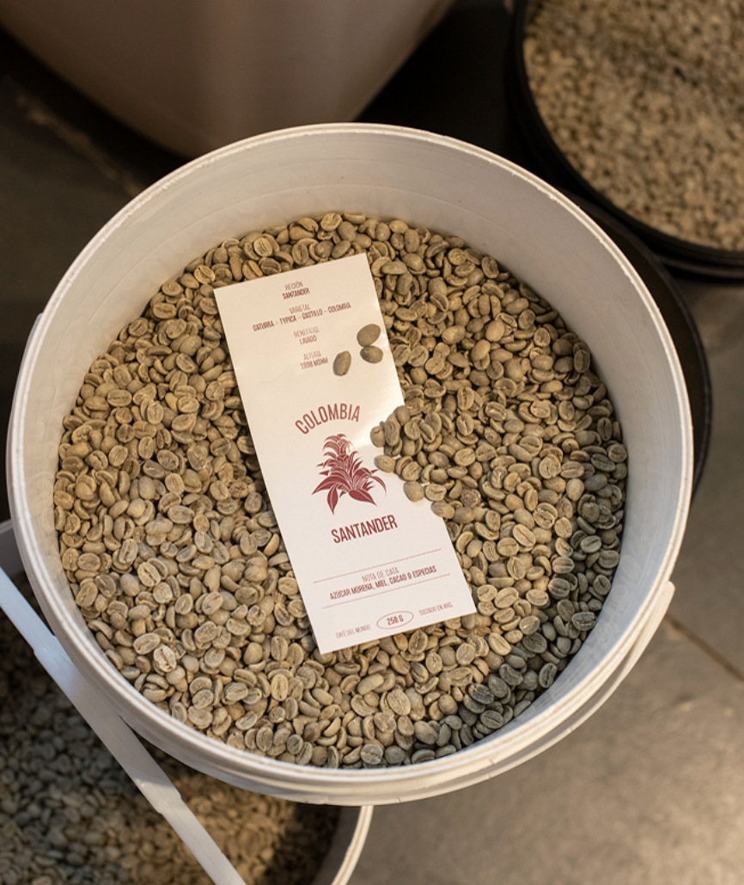

MANIFIESTO · CAFÉ DE ESPECIALIDAD
Tostar café no es solo técnica.
Es entender el grano, el origen y a quién lo va a tomar.
Nuestro tostadero es el corazón de Manifiesto. Es donde el café cobra vida y se define su carácter. Seleccionamos granos de calidad de todo el mundo, trabajamos con métodos precisos y tostamos cada lote con la atención que se merece.
Nuestros perfiles de tueste están pensados para resaltar lo mejor de cada origen. Porque creemos y trabajamos por un café rico y de calidad.
Todos los días, desde nuestro tostadero, llevamos granos de café a más de 100 cafeterías y hogares.
Roseti 2075, Villa Ortúzar
Lunes a Viernes: 08:00 a 16:00hs